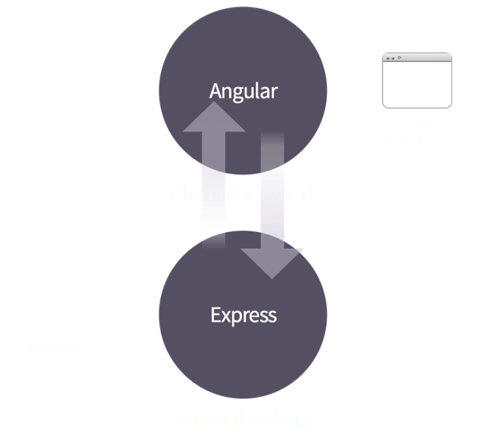

class: center, middle <img src="meteor-logo.png"> ### Build an App in 30 Min --- .left-column[ ####.current[What is it?] #### Why use it? #### Example #### Install Meteor #### Build an App #### Deploy App ] .right-column[ # Introduction - Meteor is a complete open source platform for building web and mobile apps in pure JavaScript. ] --- .left-column[ ####.current[What is it?] #### Why use it? #### Example #### Install Meteor #### Build an App #### Deploy App ] .right-column[ # Introduction - Meteor is a complete open source platform for building web and mobile apps in pure JavaScript. - A library of packages: pre-written, self-contained modules that you might need in your app. ] --- .left-column[ ####.current[What is it?] #### Why use it? #### Example #### Install Meteor #### Build an App #### Deploy App ] .right-column[ # Introduction - Meteor is a complete open source platform for building web and mobile apps in pure JavaScript. - A library of packages: pre-written, self-contained modules that you might need in your app. - Ultra-simple to use. ] --- .left-column[ #### What is it? ####.current[Why use it?] #### Example #### Install Meteor #### Build an App #### Deploy App ] .right-column[ # So, what? - Data on the Wire - Meteor doesn't send HTML over the network. The server sends data and lets the client render it. ] --- .left-column[ #### What is it? ####.current[Why use it?] #### Example #### Install Meteor #### Build an App #### Deploy App ] .right-column[ # So, what? - Data on the Wire - One Language. - Meteor lets you write both the client and the server parts of your application in JavaScript. ] --- .left-column[ #### What is it? ####.current[Why use it?] #### Example #### Install Meteor #### Build an App #### Deploy App ] .right-column[ # So, what? - Data on the Wire - One Language. - Database Everywhere. - You can use the same methods to access your database from the client or the server. <div class="bluebg">  <img width='257' src='database-everywhere2.png'> </div> ] --- .left-column[ #### What is it? ####.current[Why use it?] #### Example #### Install Meteor #### Build an App #### Deploy App ] .right-column[ # So, what? - Data on the Wire - One Language. - Database Everywhere. - Latency Compensation. - On the client, Meteor pre-fetches data and simulates models to make it look like server method calls return instantly. ] --- .left-column[ #### What is it? ####.current[Why use it?] #### Example #### Install Meteor #### Build an App #### Deploy App ] .right-column[ # So, what? - Data on the Wire - One Language. - Database Everywhere. - Latency Compensation. - Full Stack Reactivity. - In Meteor, realtime is the default. All layers, from database to template, update themselves automatically when necessary. ]